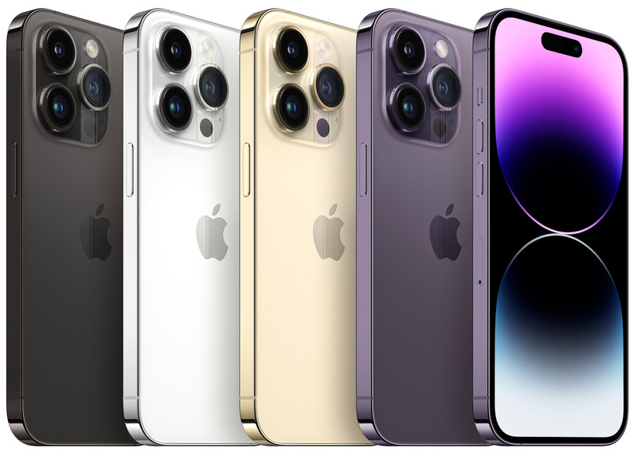
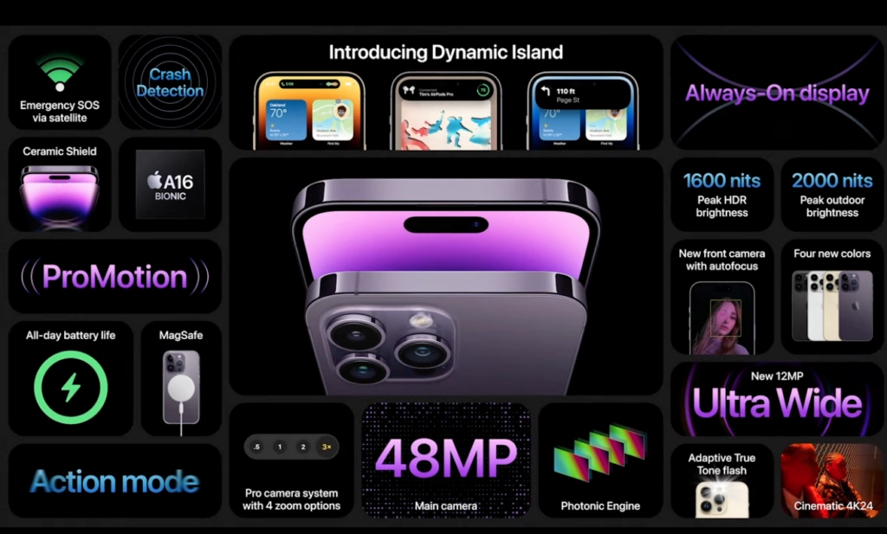

Історія
Згідно з деякими чутками, опублікованими раніше, ніж презентація Apple «Far Out», розробку наступників моделей iPhone 13 Pro почали з використання технології LTPO для функції Always-On Display, покращення мегапіксельної роздільної здатності основної камери з 12 Мп до 48 Мп, і переосмислення дисплея з вирізами (представленого в iPhone X у 2017 році та вужчого розміру, представленого в iPhone 13 та iPhone 13 Pro у 2021 році) на новий тип дисплея з вирізами. Багато прототипних структур вирізаного дисплея включали вужчий розмір вирізу, ніж у iPhone 13, форму «i» та форму таблетки.
iPhone 14 Pro та iPhone 14 Pro Max були офіційно анонсовані разом із iPhone 14, iPhone 14 Plus, Apple Watch Series 8, Apple Watch SE 2-го покоління, Apple Watch Ultra, AirPods Pro 2-го покоління та новим оновленням Apple Fitness+ на віртуальній прес-подію, знятій та записаній в Apple Park у Купертіно, штат Каліфорнія, 7 вересня 2022 року. Попередні замовлення почали приймати 9 вересня о 5:00 за північноамериканськм тихоокеанським часом. Ціна починається від 999 доларів США за iPhone 14 Pro та 1 099 доларів США за iPhone 14 Pro Max. У продаж iPhone 14 Pro і iPhone 14 Pro Max надійдуть 16 вересня 2022 року.
Дизайн
iPhone 14 Pro і 14 Pro Max доступні в чотирьох кольорах: сріблястому, космічному чорному, золотистому та темно-фіолетовому. Темно-фіолетовий — новий колір, який замінив «альпійську блакить» у iPhone 13 Pro та iPhone 13 Pro Max, тоді як космічний чорний — це перейменований графітовий колір.
Характеристики
Акумулятор
Акмулятор iPhone 14 Pro Max забезпечує 29 годин відтворення відео, тоді як варіант Pro забезпечує 24 години відтворення відео
Дисплей
iPhone тепер має дисплей Super Retina Display XDR, максимальна яскравість якого становить 2000 кд/м². Дисплей також має частоту оновлення від 1 Гц до 120 Гц з технологією LTPO (Always-On Display). iPhone 14 Pro має роздільну здатність 2556x1179 пікселів при щільності 460 пікселів на дюйм, тоді як варіант Pro Max має роздільну здатність 2796×1290 пікселів при щільності 460 пікселів на дюйм. Вони мають стійке до відбитків пальців олеофобне покриття з підтримкою відображення кількох мов і символів одночасно. Обидва варіанти також підтримують функцію «завжди на дисплеї».
Камера
iPhone 14 Pro і Pro Max оснащені новим 48-мегапіксельним сенсором, найбільшим оновленням сенсора основної камери за 7 років. Він дозволяє використовувати новий 2-кратний телефото режим, який дозволяє 2-кратне збільшення та зйомку 4К-відео без цифрового зуму. Apple тепер використовує новий рушій «Photonic Engine» для кращої якості зображення та відео.
Чипсет
iPhone 14 Pro і Pro Max оснащені новою системою на чипі A16 Bionic, яка замінила A15 Bionic, що залишилася в лінійці iPhone 13 і 13 Pro, iPhone SE 3-го покоління та iPhone 14 і 14 Plus.
Програмне забезпечення
Як і iPhone 14 і 14 Plus, 14 Pro і Pro Max постачатимуться з iOS 16.
Динамічний острів
«Динамічний острів» (англ. Dynamic Island) — це переосмислення виїмки вгорі екрану, яка була в попередніх моделях iPhone, починаючи з iPhone X. Він призначений для надання корисної інформації, наприклад, коли AirPods підключено або коли пристрій заряджається. Він також показуватиме мініатюру обкладинки альбому з Apple Music, показуватиме, коли здійснюється доступ до Apple Pay або коли ввімкнено режим «Не турбувати». Ці піктограми з’являються як розширення з обох боків датчиків, і завдяки тому, що пікселі збігаються з чорними датчиками, анімація виглядає безшовною.[9] Вхідні дзвінки та секундомір, що працює, з’являються в зоні «Динамічного остріву», який розширюється від датчиків. Індикатори Face ID також опускаються з динамічного острова, а не з’являються в центрі дисплея.
«Динамічний острів» також є інтерактивним. Наприклад, якщо хтось хоче перевірити стан батареї AirPods або припинити запис голосу, він може легко зробити це, розширивши «Динамічний острів». Поточні дії, як-от маршрути на Картах або результати спортивних змагань, також можна розгорнути простим дотиком до «Динамічного остріву» і утриманням.
